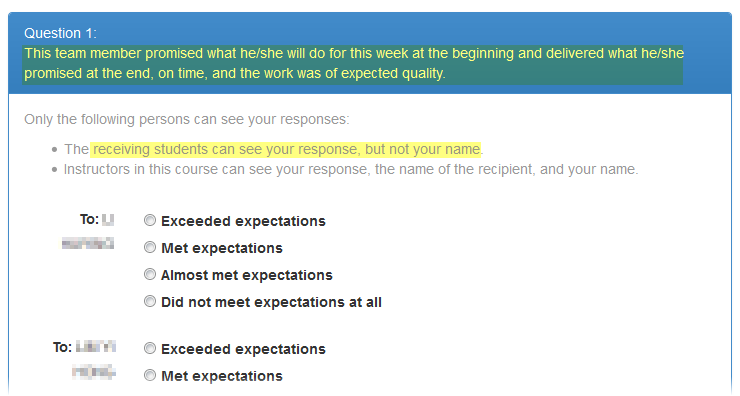
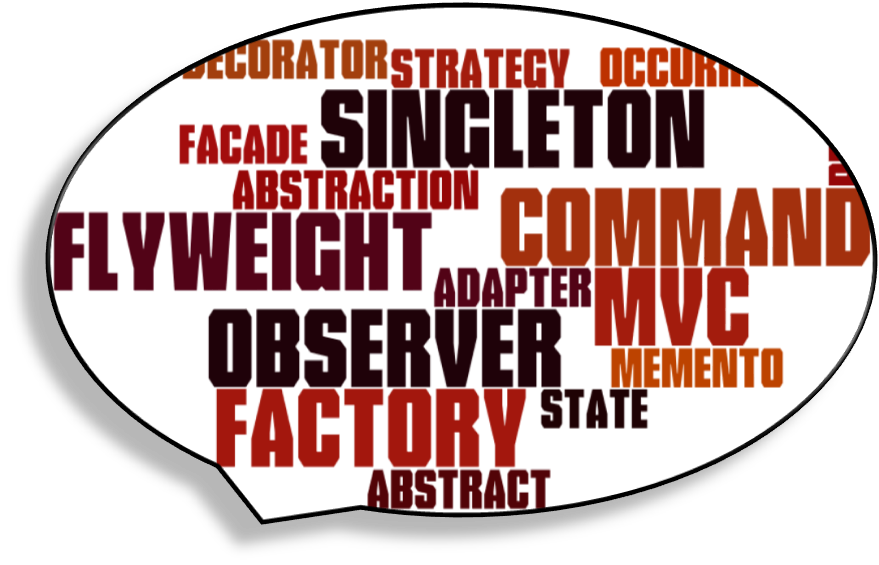

|  |
Overview: Patterns are tried and trusted solutions to recurring problems. Applying right patterns often improves our work products. Topics: patterns |
Resources:
|
Overview: Principles are little gems of wisdom gained from past experience. It is another way to learn from others' past experience. Topics: principles |
Resources: